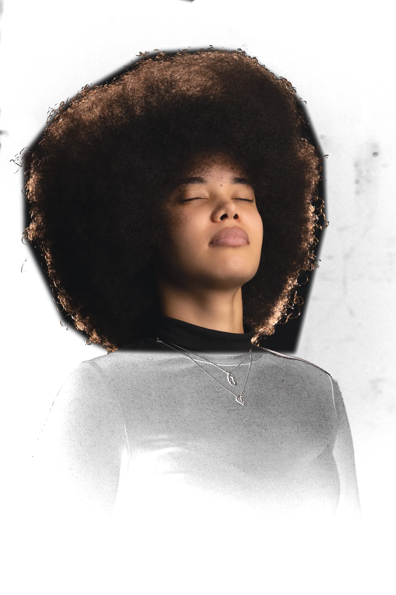
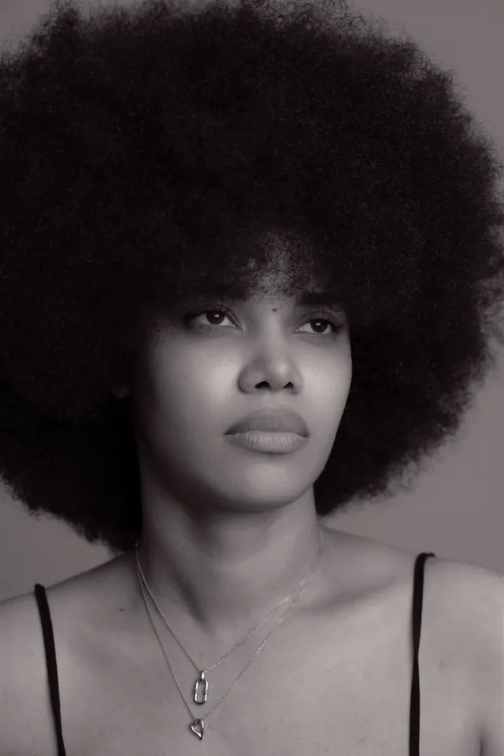
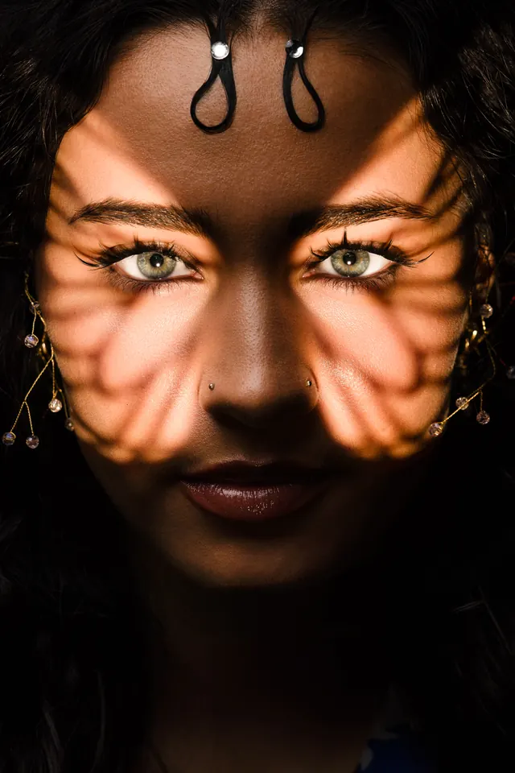
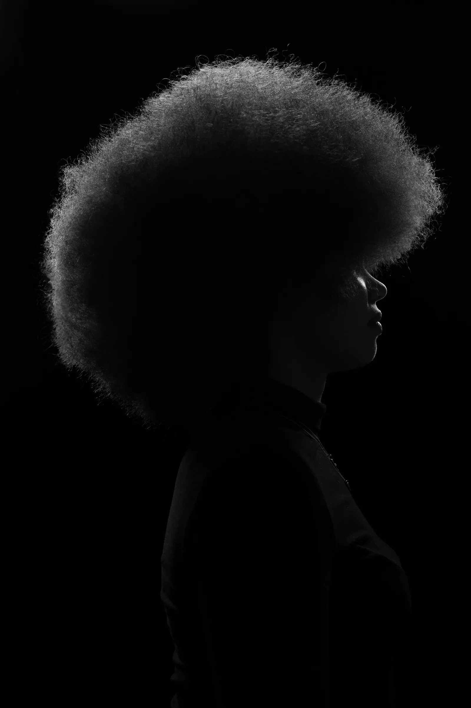
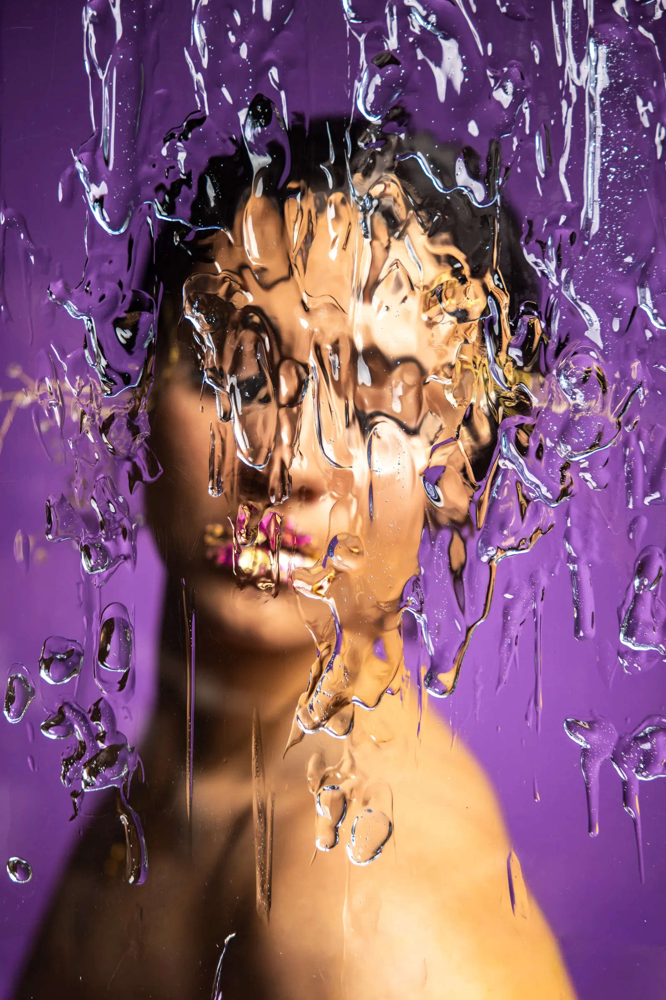
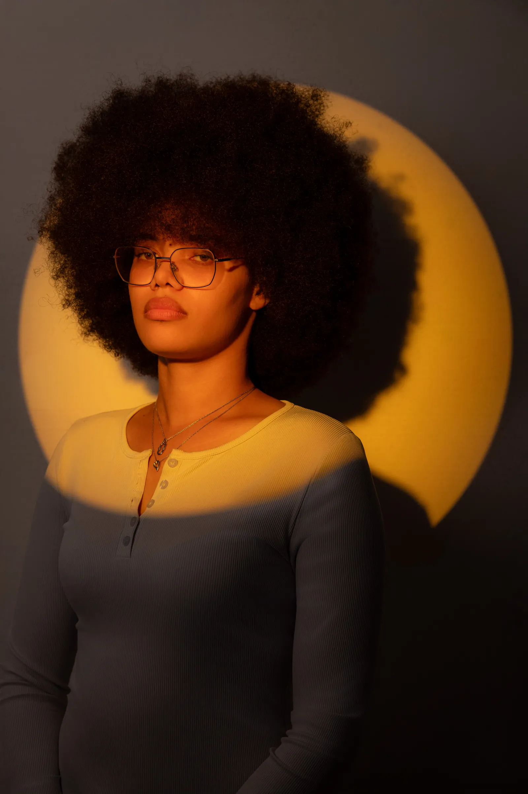
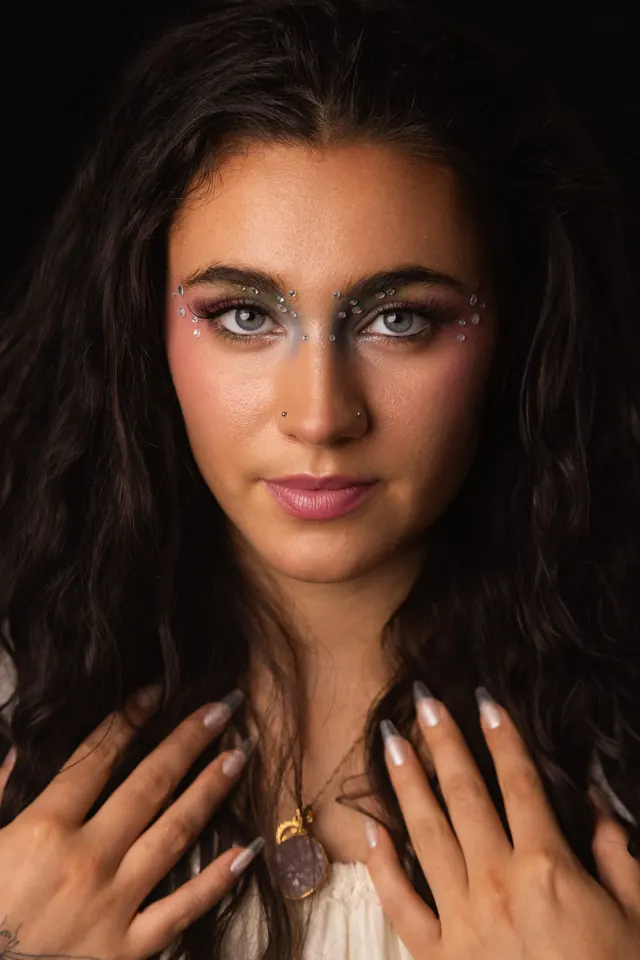
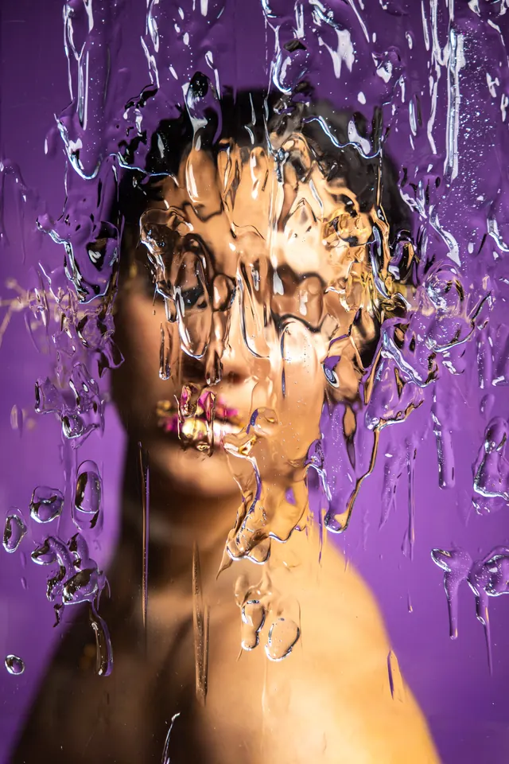
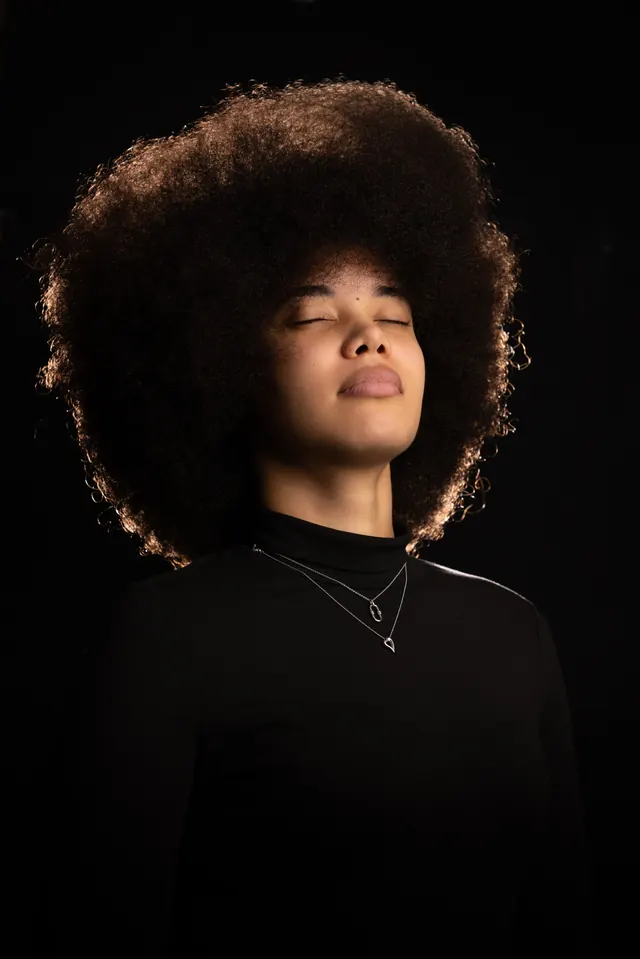

Practical
Every lesson is built around a photograph you can recreate: the light, the kit, the decisions behind it.

Learn. Create. Grow.
Practical education for photographers who want to create with intention. Courses, workshops and a community built around real light and real work.
The approach
We teach through photographs, not theory. Real lighting set-ups, honest critique and creative projects that turn curious beginners into confident image-makers who know why a picture works and how to make it again.
Every lesson is built around a photograph you can recreate: the light, the kit, the decisions behind it.
Clear explanations of the why as well as the how. No jargon without a plain-English translation.
Technique is the start. We help you build a style, a body of work and the confidence to share it.
Start here
Not sure which course fits? Choose the line that sounds most like you.

Build a solid foundation: how light behaves, how to place it and how to direct your subject.
Start with Mastering Portrait Lighting →
Go deeper on gels, patterned shadows and creative colour, online or hands-on in the studio.
Explore the Creative Lighting Toolkit →Turn your skill into a service: building a portfolio, finding clients and shooting to a brief.
See Building a Commercial Portfolio →The lighting studio
Light is the one thing every photograph has in common. Choose a chapter and see what it can do.



Let the dark do the work. A single edge of light can say more than a fully lit frame.
Shape light with gobos and found textures to add depth, mood and story to a face.
Break the rules on purpose. Water, glass and gels for portraits that feel like art direction.
Paint a background from light itself, then place your subject inside it with control.
Online courses
Featured course
Learn how to shape light, direct your subject and create portraits with intention.
Explore courseGobos, gels and modifiers: how to build mood with a handful of tools.
Explore course →
EditingA complete workflow that keeps skin texture and colour true to the image.
Explore course →Turn a skill into a service: clients, pricing and the work that wins them.
Explore course →Create vivid backdrops from light alone, in any room.
Explore course →New courses
added regularly.
In-person workshops
Hands-on sessions where you light, direct and shoot real portraits alongside Joshua, then leave with images you made yourself.
The community
Share your work, take on monthly challenges and get honest feedback from photographers at every stage.


Post images and get feedback that helps you improve.
A creative brief each month to keep you shooting.
Ask questions and watch set-ups explained in real time.
First call on workshops, courses and new resources.
Opens our Skool community.
Taught by a working photographer
Photography Here is created by Joshua Sokoya, a commercial photographer and videographer. Everything we teach is used on set, with real clients and real deadlines, then broken down so you can use it too.
Want to see the work behind the teaching? Explore the commercial portfolio.
Why Photography Here
Four promises we hold ourselves to, and a place for the people who’ve learned with us to speak for themselves.
Joshua Sokoya shoots commercially. What you learn comes from real briefs, real clients and real deadlines.
Every image on this site was made by Joshua, so you know exactly what the lesson can teach you.
We never promise instant professional results. Free tutorials and paid offers are clearly labelled, and affiliate links are always disclosed.
Outcomes, what’s included and accessibility details are shared before you book or buy.
Sample stories · to be replaced with verified quotes
I’d shot portraits for two years and still guessed where to put the light. The patterned-shadows lesson showed me where, and why. My pictures feel intentional now.
No hype and no promise of overnight success. Just clear lessons I could repeat with the kit I already owned. That honesty is why I stayed.
The feedback on my low-key portraits was kind but honest. I’ve learned more from that critique than from any tutorial I’ve watched.
The journal
Resources & shop
Guides, cheat sheets and presets designed to sit beside you on set. Merchandise is on its way.
Browse resourcesSettings, kit and lighting diagrams in one clean reference.
Edits that respect skin texture and original colour grading.
Tees, totes and kit for image-makers. Join the list for first access.
Questions
Can’t find your answer? Ask in the community and we’ll help you choose where to begin.
Join the communityNo. Lessons start with the principles of light and show how to achieve them with the kit you already have, then explain what an upgrade would actually change. Anything optional is labelled as optional.
Start with Mastering Portrait Lighting. It teaches you how to shape light, direct your subject and create portraits with intention, step by step.
Courses are online and self-paced, so you learn when it suits you. Workshops are hands-on, in-person sessions in a studio. The community is where you share your work, join monthly challenges and ask questions between lessons.
You light, direct and shoot real portraits alongside Joshua in a studio, then get feedback on your own images. Dates and locations are announced soon. Join the waitlist for first access, and accessibility details are shared before you book.
In our Skool community. Use the Join the community button to get in, share your work, take part in monthly challenges and join live Q&A sessions.
We teach practical skills and honest critique, and we do not promise instant professional results. Progress comes from practice, so the lessons are built around projects you can repeat and improve on.
Photography Here is the education brand by Joshua Sokoya, a commercial photographer and videographer. His commercial portfolio lives at joshuasokoya.com, and the lessons here come from the same real-world shoots.
Start here